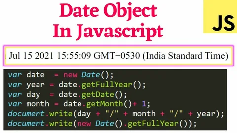
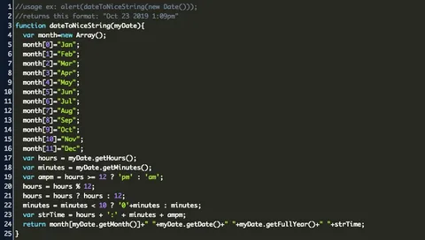
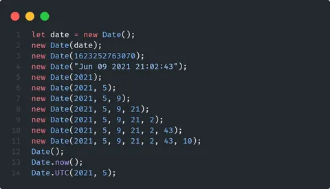
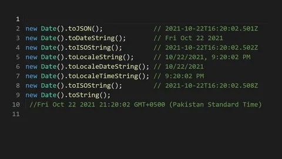
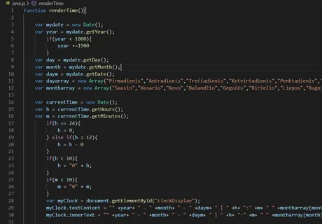

JavaScript Date Ob'ekti

JavaScript `Date` obyekti vaqt va sanani ishlash uchun ishlatiladi. U turli xil usullarni qo'llab-quvvatlaydi, jumladan vaqtni yaratish, olish va o'rnatish.
Date Obyektini Yaratish

JavaScript-da `Date` obyektini yaratish uchun `new Date()` dan foydalaniladi. Misol:
Vaqtni Formatlash
`Date` obyekti turli usullar yordamida vaqtni formatlash imkonini beradi, masalan, `getFullYear()`, `getMonth()`, `getDate()`, `getHours()`, `getMinutes()`, `getSeconds()`.
Sanalarda Hisob-kitoblar

Sanalarda hisob-kitoblar qilish uchun `Date` obyekti turli xil arifmetik operatsiyalarni qo'llab-quvvatlaydi, masalan, vaqt oralig'ini hisoblash.
Quyida JavaScript-da `Date` obyekti bilan ishlashga oid ba'zi misollar keltirilgan:
// 1 yanvar 2024 yil sanasini yaratish
let yangiSana = new Date(2024, 0, 1);
console.log(yangiSana);
// Hozirgi vaqtni olish
let vaqtHozir = new Date().getTime();
console.log(vaqtHozir);
// Ikki sana orasidagi farqni hisoblash
let oldSana = new Date('2023-01-01');
let farq = yangiSana - oldSana;
console.log(farq / (1000 * 60 * 60 * 24)); // Farqni kunlarda ko'rsatish
JavaScript'dagi Date obyekti — vaqt va sanani boshqarish uchun juda qulay va ko'p qirrali vosita. Ushbu obyekt dasturchilarga bir nechta formatda sanalarni yaratish, o'zgartirish, olish va ular orasida hisob-kitoblar qilish imkoniyatini beradi. Date obyekti bilan ishlashni o'rganish orqali siz JavaScript'da vaqtga bog'liq vazifalarni oson va samarali tarzda bajara olasiz.
JavaScript Date Obyektini Yaratish
JavaScript-da Date obyektini yaratishning bir necha usullari mavjud. Eng oddiy usul — new Date() funksiyasini chaqirish. Bu usul sizga joriy vaqtni va sanani oladi. Masalan, let hozirgiSana = new Date(); kod satri orqali siz hozirgi sana va vaqtni olishingiz mumkin. Bundan tashqari, Date obyektini yaratishda maxsus sana va vaqtni ko'rsatish ham mumkin. Masalan, new Date('2024-01-01') funksiyasi 2024 yilning 1 yanvar sanasini yaratadi. Agar siz faqat yil, oy va kunni kiritishni istasangiz, new Date(2024, 0, 1) deb yozishingiz mumkin. Diqqat qilish kerakki, oylik qiymatlar 0 dan boshlanadi, ya'ni yanvar - 0, fevral - 1 va hokazo.
Date Obyekti Metodlari
Date obyektining asosiy kuchi uning ko'p sonli metodlarida. Bu metodlar sanani va vaqtni o'zgartirish, olish, yoki hisoblash imkonini beradi. Misol uchun, getFullYear() metodi sizga yilni qaytaradi, getMonth() metodi oy raqamini (0-11 oralig'ida), getDate() esa oy ichidagi kunni qaytaradi. Agar siz haftaning kunini bilishni xohlasangiz, getDay() metodidan foydalanishingiz mumkin. Bu metod yakshanba uchun 0 dan boshlanib, shanba uchun 6 gacha bo'lgan qiymatlarni qaytaradi. Soat, daqiqa, soniya va millisekundlarni olish uchun mos ravishda getHours(), getMinutes(), getSeconds(), va getMilliseconds() metodlari mavjud.
Agar siz UTC (Universal Time Coordinated) vaqt zonasida ishlamoqchi bo'lsangiz, getUTCFullYear(), getUTCMonth(), getUTCDate() kabi metodlardan foydalanishingiz mumkin. Ushbu metodlar sizga sanani UTC vaqt zonasida olish imkonini beradi.
Sanani o'zgartirish uchun setFullYear(), setMonth(), setDate() kabi metodlar mavjud. Ushbu metodlar yordamida siz sanani o'zingiz xohlagan yil, oy yoki kunga o'zgartirishingiz mumkin. Misol uchun, sana.setFullYear(2025); kod satri sanani 2025 yilga o'zgartiradi.
Sanani Formatlash va Chiqarish
JavaScript Date obyekti sizga sanani formatlash uchun ham bir qancha metodlarni taklif etadi. toDateString() faqat sanani matn sifatida chiqaradi, toTimeString() esa faqat vaqtni matn sifatida qaytaradi. toLocaleDateString() metodini ishlatib, siz sanani foydalanuvchining joylashuviga qarab formatda chiqarishingiz mumkin. Bu metod, masalan, "uz-UZ" formatida sanani chiqaradi. ISO formatida sana olish uchun toISOString() metodidan foydalaning, bu metod sanani "YYYY-MM-DDTHH:mm
.sssZ" formatida qaytaradi. UTC formatida sana olish uchun toUTCString() metodi ishlatiladi, bu metod sanani "Tue, 01 Jan 2024 00:00:00 GMT" formatida qaytaradi

